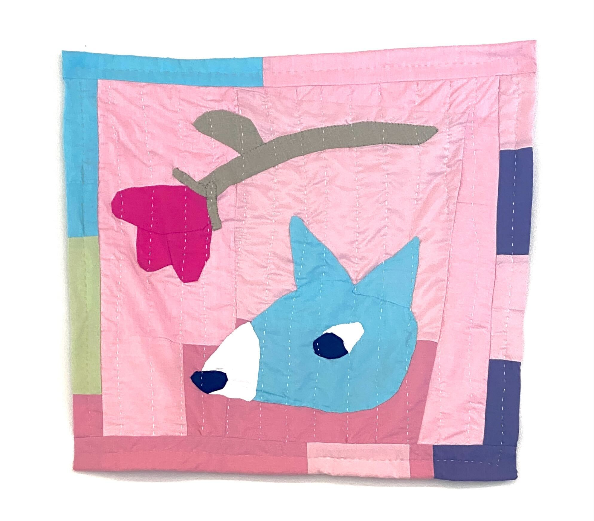

I started making quilts in late 2024. I had recently moved, and had been going through a lot of my clothing to get rid of things I no longer needed. Instead of donating or throwing away the clothes, I had this idea to repurpose the fabric from them into a quilt.


I had so much fun making this one (and I still had so much fabric left from my clothes) that I decided to make more.


Interestingly, I actually didn't have a full picture in my mind of what "quilting" was before I decided to make my first quilt. I thought of quilting mainly as the process of putting together a patchwork design (the "quilt top"). Theoretically I guess I knew that a quilt was not just a patchwork item, but I didn't realize that "quilting" usually refers to the act of sewing the layers of a quilt (top, batting, and backing) together to make a thick piece of fabric. The amazing thing about quilting, which I didn't understand before I did it, is that it's really a method to make a new piece of fabric, like weaving or knitting, except that instead of the component parts of the fabric being thread or yarn, it's smaller pieces of fabric.


I'm not a huge fan of long sewing sessions on a sewing machine, so all of my big quilts so far have been hand quilted.



I have also done some experimenting with making quilted bags and tiny wall hanging quilts. These are the only places so far I have done machine quilting (because quilting a small panel on a machine is much more doable to me than other quilts).